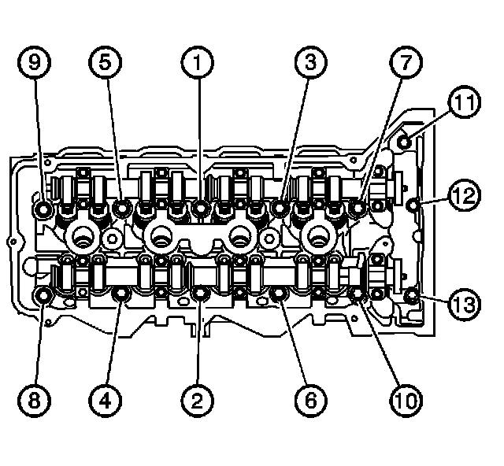
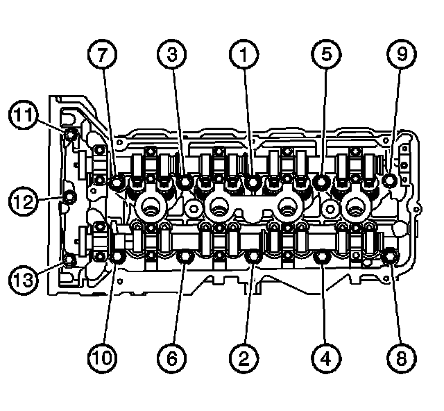
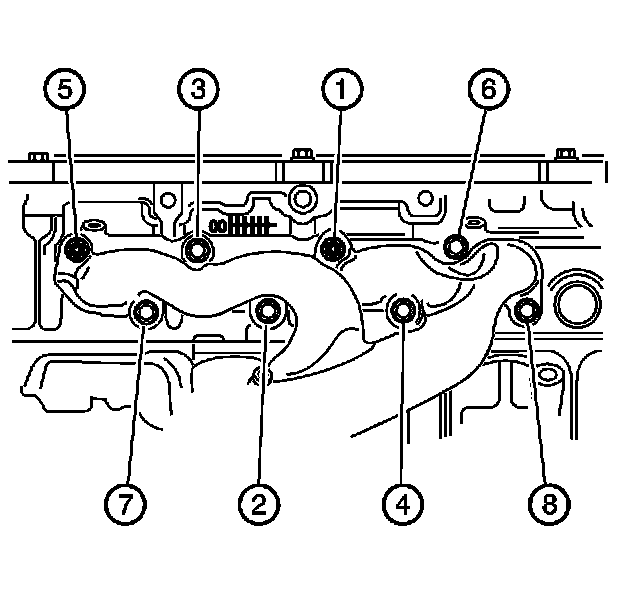
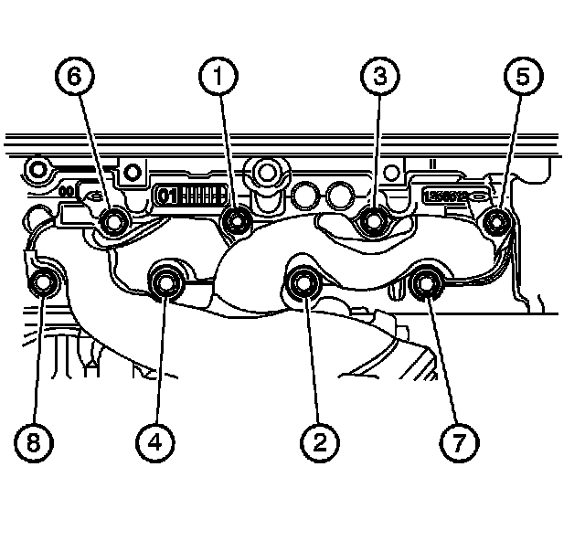

Cylinder Head Assembly: Specifications
CamshaftCamshaft End Play 0.120-0.220 mm (0.0050-0.0087 in.)
Camshaft Journal Diameter 26.948-26.972 mm (1.0610-1.0619 in.)
Camshaft Journal Out-of-Round 0.006 mm (0.0002 mm (
Camshaft Journal to Bore Clearance
Production 0.051-0.076 mm (0.0020-0.0030 in.)
Service 0.040-0.090 mm (0.0016-0.0035 in.)
Camshaft Lobe Duration at 0.150 mm ( (0.006 in.)) Lift - Exhaust 246°
Camshaft Lobe Duration at 0.150 mm ( (0.006 in.)) Lift - Intake 251°
Camshaft Lobe Lift - Exhaust 5.94 mm (0.2339 in.)
Camshaft Lobe Lift - Intake 6.15 mm (0.2421 in.)
Camshaft Lobe Overlap at 0.150 mm ( (0.006 in.)) Lift 0.0°
Camshaft Runout 0.050 mm (0.0020 in.)
Camshaft Thrust Surface
Runout 0.037 mm (0.0015 in.)
Width 22.990-23.090 mm (0.9051-0.9091 in.)
Camshaft Timing at 0.150 mm ( (0.006 in.)) Lift
Intake Opens 11.0° ATDC
Intake Centerline 133.0° ATDC
Intake Closes 255.7° ATDC
Exhaust Opens 243.2° BTDC
Exhaust Centerline 107.0° BTDC
Exhaust Closes 11.3° ATDC
Camshaft Position Actuator
Exhaust Authority 50 crankshaft°/25 camshaft°
Intake Authority 40 crankshaft°/20 camshaft°
Cylinder Head
Camshaft Bearing Bore Diameter 27.013-27.033 mm (1.0635-1.0642 in.)
Camshaft Bearing Bore Out-of-Round 0.010 mm (0.0004 in.)
Combustion Chamber Depth - at Measurement Point 10.470-10.710 mm (0.4122-0.4217 in.)
Cylinder Head Height - Deck to Camshaft Centerline Bore 136.00 mm (5.3543 in.)
Surface Flatness - Block Deck 0.050 mm (0.0020 in.)
Surface Flatness - Exhaust Manifold Deck 0.220 mm (0.0087 in.)
Surface Flatness - Intake Manifold Deck 0.220 mm (0.0087 in.)
Valve Guide Bore - Exhaust 5.969-5.989 mm (0.2350-0.2359 in.)
Valve Guide Bore - Intake 5.969-5.989 mm (0.2350-0.2359 in.)
Valve Guide Installed Height - Exhaust 14.300 mm (0.5630 in.)
Valve Guide Installed Height - Intake 14.720 mm (0.5795 in.)
Valve Lifter Bore Diameter 12.013-12.037 mm (0.4730-0.4739 in.)
Valve System
Valves
Valve Face Angle 45°
Valve Face Runout 0.038 mm (0.0015 in.)
Valve Face Width
Exhaust 1.500 mm (0.0591 in.)
Intake 1.000 mm (0.0394 in.)
Valve Head Diameter
Exhaust 28.880-29.140 mm (1.1370-1.1472 in.)
Intake 36.090-36.350 mm (1.4209-1.4311 in.)
Valve Length
Exhaust 91.730-91.990 mm (3.6114-3.6217 in.)
Intake 110.600-110.860 mm (4.3543-4.3646 in.)
Valve Seat Angle 45.75°
Valve Seat Relief Angle 20°
Valve Seat Relief Width
Exhaust 0.160-0.360 mm (0.0063-0.0142 in.)
Intake 0.110-0.310 mm (0.0043-0.0118 in.)
Valve Seat Runout 0.050 mm (0.0020 in.)
Valve Seat Undercut Angle
Exhaust 65°
Intake 60°
Valve Seat Width
Exhaust 1.300-1.700 mm (0.0512-0.0669 in.)
Intake 0.420-0.820 mm (0.0165-0.0323 in.)
Valve Stem Diameter 5.920-5.940 mm (0.2331-0.2339 in.)
Valve Stem Out-of-Round 0.008 mm (0.0003 in.)
Valve Stem Straightness 0.013 mm (0.0005 in.)
Valve Stem-to-Guide Clearance
Exhaust
Production 0.050-0.100 mm (0.0020-0.0039 in.)
Service 0.050-0.120 mm (0.0020-0.0047 in.)
Intake
Production 0.028-0.068 mm (0.0011-0.0027 in.)
Service 0.028-0.110 mm (0.0011-0.0043 in.)
Valve Lifters
Valve Lifter Diameter 11.986-12.000 mm (0.4719-0.4724 in.)
Valve Lifter-to-Bore Clearance 0.037-0.041 mm (0.0015-0.0016 in.)
Rocker Arms
Valve Rocker Arm Ratio 1.68 to 1
Valve Rocker Arm Roller Diameter 17.740-17.800 mm (0.6984-0.7008 in.)
Valve Springs
Valve Spring Coil Thickness 4.110 x 3.280 mm (0.1618 x 0.1291 in.)
Valve Spring Diameter
Inside 17.750-18.250 mm (0.6988-0.7185 in.)
Outside 26.23 mm (1.0327 in.)
Valve Spring Free Length 40.790-43.690 mm (1.6059-1.7201 in.)
Valve Spring Height
Closed 35.000 mm (1.3780 in.)
Open 24.500 mm (0.9646 in.)
Camshaft Bearing Cap Bolt 12 Nm (106 lb in.)
Camshaft Position Actuator Bolt 120 Nm (89 lb ft.)
Right:

Left:

Cylinder Head Bolt
M11
First Pass - In Sequence 30 Nm (22 lb ft.)
Second Pass - In Sequence 60°
Third Pass - In Sequence 60°
Final Pass - In Sequence 60°, total 180°
M6 12 Nm (106 lb in.)
Right:

Left:

Exhaust Manifold
Bolt 25 Nm (18 lb ft.)
Nut 25 Nm (18 lb ft.)

Intake Manifold
Mounting Bolt 10 Nm (89 lb in.)